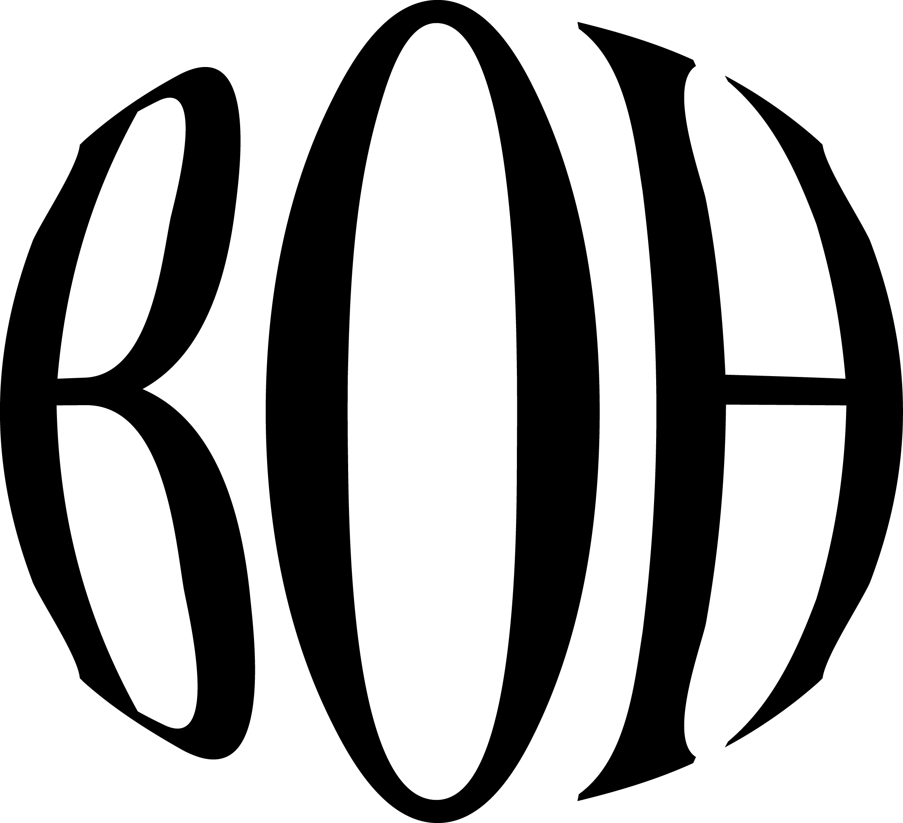

[3.3 The Batch]
To get your In House Pin Concierge assembled, you’ll need 2 free accounts; one to host your images and one to schedule your pin rotation. Don’t get spooked by the tech-bro names, I’ll walk you through each step of the way!
We’ll use GitHub to host your pin images so Pinterest can access them publicly. Already have an account? Just enter your username here.
(PS: You’ll also need to add this username in the sheet under your batch prep checklist)
Click below to make a folder called pin-images, then click Create repository.
(PS: make sure to keep the visibility public so Pinterest can post your images)
Open the upload screen, drag in all 70 pin images at once, then click Commit changes when they’re finished loading.
Then, check your folder and make sure all 70 images are there
Enter your GitHub username in step one first.
The In House Scheduler uses Zernio to schedule and post your pins. Make a free account, connect Pinterest, then copy your API key and keep it handy, after you’ve shuffled your pins, when you’re ready to schedule it will ask for this API key
(note: this is a secret key, since you’ve made a copy - the sheet and the key stay private inside your own google drive - we never see it)
That’s the one-time setup done! Go back to the Batch Prep tab in your Pin Planner, and continue with the rest of the checklist!